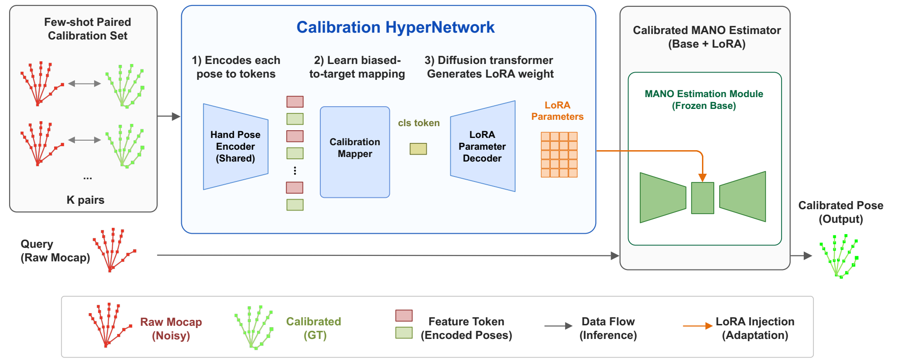
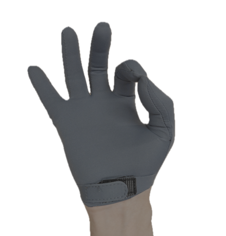
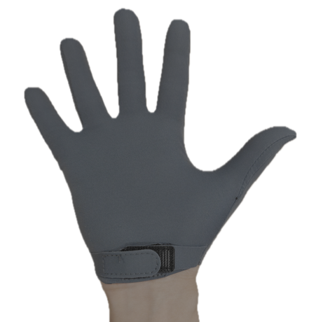
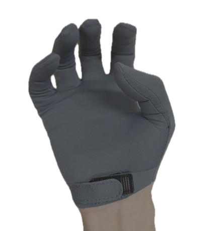
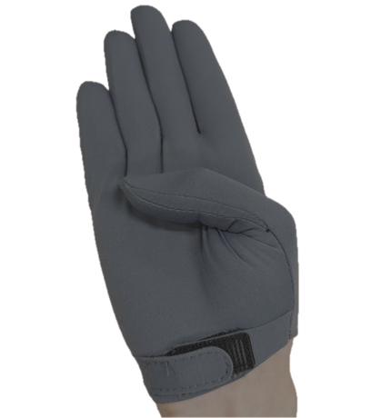
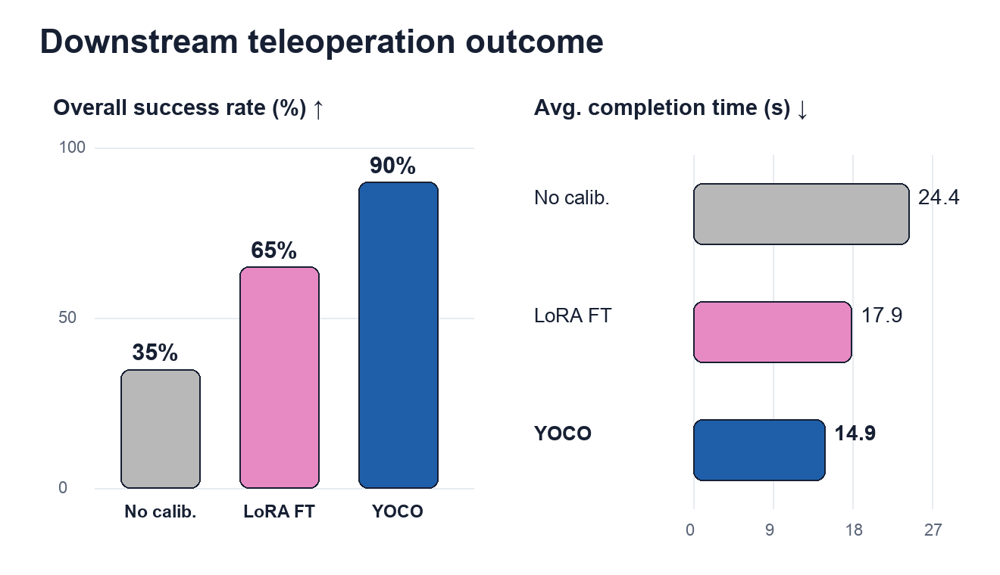

Abstract
Dexterous teleoperation requires reliable human-hand state estimations. However, common low-cost motion-capture gloves and markerless trackers often exhibit biases that vary across users, glove fit, and recording sessions, degrading retargeting and demonstration quality. We present YOCO, a fast few-shot, fine-tuning-free calibration framework that corrects biased hand-pose streams from a small set of paired raw and target poses.
Instead of optimizing a separate model for every operator or session, YOCO conditions a calibration HyperNet on the paired examples and predicts LoRA-style updates for a frozen MANO hand-estimation module, turning per-user calibration into a lightweight feed-forward adaptation step while preserving the geometric prior of MANO and the efficiency of a compact estimator. We train YOCO with synthetic drift augmentations on InterHand2.6M and evaluate on augmented InterHand sequences, offline real glove data, and dexterous teleoperation tasks. Across these settings, YOCO improves calibration efficiency, hand-state estimation quality and teleoperation performance compared with uncalibrated input and standard calibration baselines.
From a few pose pairs to a calibrated hand
YOCO operates on the 21-joint 3D hand-pose stream produced by a tracker. A HyperNet uses a small set of paired raw and target poses to generate session-specific LoRA weights for a frozen MANO estimator.

1. Capture the session’s bias
Each raw pose is paired with a target pose. The shared pose encoder and Transformer calibration mapper summarize the relationship between the two pose streams.
2. Generate the adaptation
The HyperNet predicts low-rank weight updates for the frozen MANO estimator. The adapted estimator maps new raw observations to calibrated hand geometry.
Four prompts to get started
The physical teleoperation protocol uses K = 4 paired poses. Target poses are recorded once with Apple Vision Pro and stored in a reusable library. At runtime, the operator only needs the low-cost glove.




A calibration applies to the current user and session while the bias remains approximately stable.
YOCO in action
A walkthrough of the calibration problem, the method, and physical teleoperation.
Download video 1 min 33 s Silent video
Better hand-state estimates
With four calibration pairs, YOCO reduces PA-MPJPE on augmented InterHand2.6M from 16.55 to 10.45 mm. It also improves hand-pose accuracy on paired real-glove / AVP data.
Augmented InterHand2.6M
| Method | MPJPE ↓mm | PA-MPJPE ↓mm | Tip-PA ↓mm | AUCJ ↑ | Pinch ↓mm | Adaptation ↓s, aggregate |
|---|---|---|---|---|---|---|
| No calibration | 21.52 | 16.55 | 37.15 | 0.611 | 48.49 | 0.00 |
| Ridge | 17.62 | 13.00 | 28.28 | 0.676 | 45.35 | 1.6 |
| Last-layer-Finetune | 16.62 | 12.01 | 25.92 | 0.692 | 39.18 | 45.6 |
| Full-Finetune | 18.11 | 12.77 | 29.21 | 0.668 | 37.11 | 95.4 |
| LoRA-Finetune | 16.38 | 11.67 | 25.33 | 0.694 | 37.28 | 89.4 |
| YOCO (ours) | 15.64 | 10.45 | 23.29 | 0.702 | 34.90 | 11.2 |
Real glove / AVP
| Method | MPJPE ↓mm | PA-MPJPE ↓mm | Tip-PA ↓mm | AUCJ ↑ | Pinch ↓mm | Adaptation ↓s, aggregate |
|---|---|---|---|---|---|---|
| No calibration | 20.49 | 14.63 | 36.22 | 0.610 | 51.39 | 0.00 |
| Ridge | 24.71 | 19.21 | 45.50 | 0.573 | 57.54 | 1.49 |
| Last-layer-Finetune | 18.86 | 14.67 | 33.88 | 0.643 | 43.63 | 5.04 |
| Full-Finetune | 20.00 | 15.73 | 36.67 | 0.630 | 49.89 | 13.04 |
| LoRA-Finetune | 18.72 | 13.94 | 33.23 | 0.648 | 54.01 | 14.57 |
| YOCO (ours) | 17.75 | 13.14 | 31.73 | 0.657 | 42.79 | 6.73 |
Adaptation times are totals for the evaluation sets on one H100, rather than the latency of a single calibration session. ↓ Lower is better. ↑ Higher is better.
More successful dexterous teleoperation
Across four physical tasks, the YOCO pipeline achieves 90% success (36/40 trials), compared with 65% for LoRA-Finetune and 35% without calibration.

These results evaluate complete teleoperation pipelines, including separately trained retargeting models for each calibration condition. They do not isolate calibration as the sole cause of the task gains.
Real-world task demonstrations
Contact-sensitive manipulation with a low-cost glove and a dexterous robot hand.
Bottle-cap opening
Twist and remove the cap from a fixed bottle.
YOCO: 10/10 successful trialsEarbud pinch grasping
Lift an earbud with a thumb–middle-finger pinch and hold it for 3 s.
YOCO: 8/10 successful trialsThree-finger glue grasping
Lift a glue bottle with the thumb, index, and middle fingers; hold for 3 s.
YOCO: 8/10 successful trialsTissue-box opening
Stabilize the box with four fingers and pull the lid with the thumb.
YOCO: 10/10 successful trialsThe earbud task uses a middle-finger pinch, while the calibration library contains an index-finger pinch.
BibTeX
@inproceedings{zhang2026yoco,
title = {YOCO: You Only Calibrate Once! Fast Mocap
Calibration for Dexterous Teleoperation},
author = {Zhang, Yu and Li, Yunqi and Du, Yushi
and Ma, Yi and Yang, Yanchao},
booktitle = {Conference on Robot Learning (CoRL)},
year = {2026},
eprint = {2610.11657},
archivePrefix = {arXiv},
primaryClass = {cs.RO},
url = {https://arxiv.org/abs/2610.11657}
}